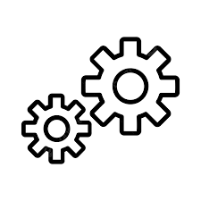
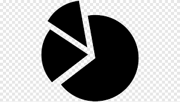

Laporan keuangan terperinci
ERP ini menawarkan laporan keuangan termasuk neraca, laporan laba rugi, dan laporan arus kas untuk membantu Anda menilai kinerja Anda dan meningkatkannya jika diperlukan.

Pelaporan yang dapat disesuaikan
Sesuaikan laporan keuangan dengan opsi seperti menambah/menghapus bidang data, mengubah format laporan, dan menerapkan filter data.

Analisis multidimensi
ERP ini memungkinkan analisis data keuangan multi-dimensi, termasuk berdasarkan produk, pelanggan, atau proyek, untuk mendapatkan wawasan lebih dalam mengenai kinerja keuangan.
Laporan Real-time
Aplikasi ini menawarkan pelaporan keuangan real-time agar bisnis tetap mendapat informasi dan mengambil keputusan cepat tentang kinerja keuangan mereka.